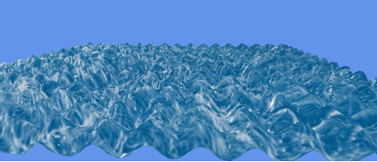
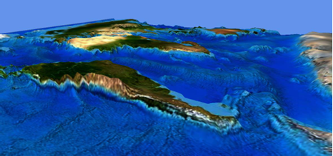
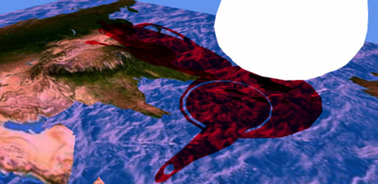
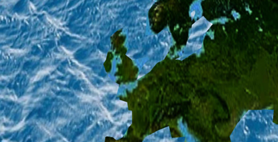

2024 Q4 · Solo University Project
Graphics Programming with Shaders
A graphics programming coursework project focused on writing and integrating custom shaders for vertex manipulation, height-map terrain, animated water, lighting, shadow mapping, and post-processing.
Project overview
This project was produced for my university Graphics Programming module. The aim was to demonstrate practical shader implementation through a rendered scene containing animated water, height-map terrain, lighting, shadows, and a post-process edge-detection effect.
The project used multiple shader stages and render passes, with C++ application code managing the scene setup, shader parameters, depth passes, and adjustable values used to test the visual result in real time.
What I implemented
- Dynamic water surface deformation: created animated ocean waves through sinusoidal vertex manipulation, using amplitude, frequency, speed, and time-based movement.
- Height-map terrain rendering: displaced terrain vertices using a height map to create a more varied 3D surface from texture data.
- Lighting and shadow mapping: implemented directional-light shadow behaviour using depth passes and shader-side light-space position calculations.
- Vertex and texture shader integration: passed transformed positions, texture coordinates, normals, and depth values through the graphics pipeline for later shader stages.
- Edge-detection post-processing: added a Sobel-style edge-detection pass that samples neighbouring pixels, calculates gradient strength, and filters the final colour output.
- Runtime experimentation: exposed values such as wave amplitude, frequency, speed, and edge strength so the visual output could be adjusted and evaluated.
Technical focus
The strongest part of the project was the combination of vertex manipulation and shader-controlled rendering effects. The water shader produced a clear animated surface, while the terrain shader used height data to give the scene more depth and variation. The shadow and post-process work extended the scene beyond basic rendering by adding depth-based lighting information and a screen-space visual effect.
The project also gave me practical experience evaluating graphical trade-offs. Some features worked better than others: the water deformation was visually clear, while the terrain and shadow results depended heavily on scene composition, height-map quality, and the positioning of the light and camera. This made the project useful not only as a shader implementation exercise, but also as a lesson in how technical graphics work needs strong scene presentation to show the effect properly.
Gallery



